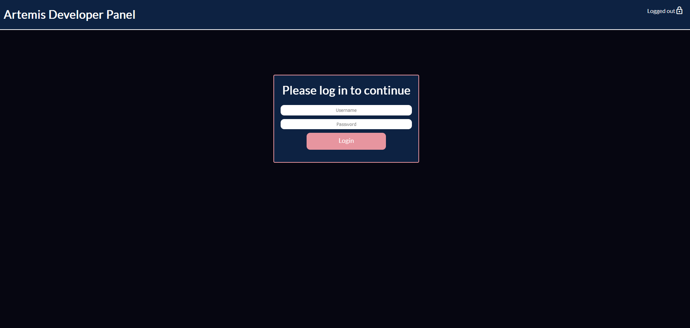
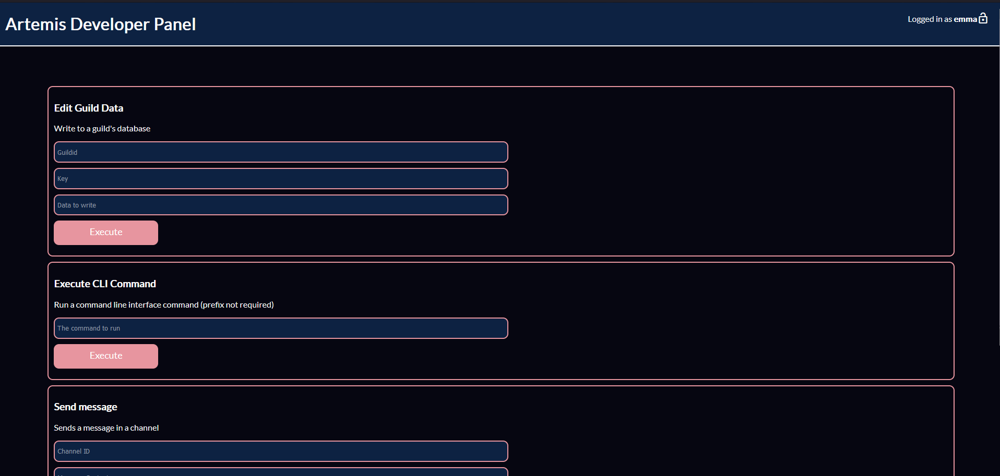

Over the past 3 years, I have taught myself web development. This is a short showcase of a few projects I have made over those years.
My web development skills include writing backend webservers in Python and Javascript, and doing front-end design with HTML and CSS
-
This website
This website was programmed by me! It took several hours not counting the edits but here it is! The backend is hosted on Neocities to free up my at-home server for more projects
-
Artemis backend panel
This is a backend web panel for managing one of my Discord bots, Artemis. It features an account system and functions that help control the bot, such as directly editing the database. The backend is built entirely on Python's Flask module.
  -
Dark Blue Roblox
This is a custom theme for the Roblox website that I host on Stylus. All of the CSS code was written by me, and the color and design was picked by me, and is designed to match a custom Discord theme I wrote
View Style